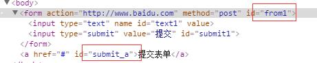

表单事件
Event onsubmit：当表单提交的时候触发 表单ID.submit() 这是1个方法 表单ID.onreset：表单重置的时候触发

window.onload = function(){
document.getElementById("from1").onsubmit = function(){//当表单提交的时候触发
if (document.getElementById("text1").value =="") {
alert("请输入类容");
return false;
}
}
document.getElementById("from1").onreset = function(){//重置的时候触发
alert("重置了")
}
document.getElementById("submit_a").onclick = function(){
document.getElementById("from1").submit();
}
}
操作Class addCalss removeClass hasClass
window.onload = function(){
var oDiv = document.getElementById("div1");
// addClass(oDiv,'box1');
// removeClass(oDiv,'box');
var br = hasClass(oDiv,'box1');
if (br =='box1,,'){//必须要判断返回值是不是你要找你那个class记得多2个,,
alert("有这个calss")
}else
{
alert("没有");
}
}
function hasClass(obj, cls) {
return obj.className.match(new RegExp('(\\s|^)' + cls + '(\\s|$)'));
}
function addClass(obj, cls) {
if (!this.hasClass(obj, cls)) obj.className += " " + cls;
}
function removeClass(obj, cls) {
if (hasClass(obj, cls)) {
var reg = new RegExp('(\\s|^)' + cls + '(\\s|$)');
obj.className = obj.className.replace(reg, ' ');
}
}
文档对应的2个事件 对象.onscroll：在滚动条滚动的时候触发 对象.onresize 在浏览器窗口改变的时候触发
window.onload = function(){
var i = 0;
//在滚动条滚动的时候触发
window.onscroll = function(){
document.title = i++;
}
//在浏览器窗口改变的时候触发
window.onresize = function(){
alert("我改变的窗体大小")
}
}
EVent 跟随鼠标移动的div clientX[Y]知识点击看demo event对象：必须得在事件函数中调用 兼容用法:var ev = ev ||evevnt; 对象.clientX[Y]页面可视区的位置
window.onload = function(){
document.onclick = function(ev){
//js事件对象的兼容写法
var ev = ev ||evevnt;
//相对于页面可视区的位置对象.clientX[Y]
alert(ev.clientX+'----'+ev.clientY);
}
}
焦点事件 能够相应用户操作的才有焦点事件 比如input textarea a 等 对象.onfocus对象.onblur oText.focus();//页面刷新的时候直接让元素获得焦点
window.onload = function(){
var oText = document.getElementById("text1");
oText.onfocus = function(){//当元素获取到焦点的时候
if ( this.value == '请输入内容') {
this.value = '';//清空value
}
}
oText.onblur = function(){//当元素失去焦点的时候触发
if (this.value =='') {
this.value = '请输入内容'
}
}
oText.focus();//页面刷新的时候直接让元素获得焦点
}
call()方法 调用函数fn1() == fn1.call() call方法第一个参数可以改变函数执行过程中的内部this的指向，call方法第二个参数开始就是原来函数的参数列表
function fn1(a, b) {
alert(this);
alert(a + b);
}
//fn1(); //window
//call 函数下的一个方法，call方法第一个参数可以改变函数执行过程中的内部this的指向，call方法第二个参数开始就是原来函数的参数列表
fn1.call(null, 10, 20); //调用函数 fn1() == fn1.call()
事件绑定的第二种方式 ie-->对象.attachEvent 标准-->对象.addEventListener bind方法的封装
window.onload = function(){
function fn1() {
alert(this);//this指向window
}
function fn2() {
alert(2);//this指向该事件对象
}
//ie
// document.attachEvent('onclick',fn1);
// document.attachEvent('onclick',fn2);
//FF 谷歌 addEventListener(事件,函数,布尔),是否捕获,默认false,就是事件冒泡,true就是阻止冒泡
// document.addEventListener('click', fn1,false);//这里注意事件名称没有on
// document.addEventListener('click',fn2,false);
//封装事件绑定的bind方法
function bind(obj, evname, fn) {
if (obj.addEventListener) {
obj.addEventListener(evname, fn, false);
} else {
obj.attachEvent('on' + evname, function() {
fn.call(obj);//这里改变了函数的对象为obj,变为一致的this
});
}
}
bind(document, 'click', fn1);
bind(document, 'click', fn2);
}
阻止冒泡 ie: 事件对象.stopPropagation(); 标准浏览器 event.cancelBubble = true
/*
阻止冒泡 : 当前要阻止冒泡的事件函数中调用 event.cancelBubble = true;
*/
var oBtn = document.getElementById('btn');
var oDiv = document.getElementById('div1');
oBtn.onclick = function(ev) {
var ev = ev || event;
ev.stopPropagation();//阻止当前对象的当前事件的冒泡
//ev.cancelBubble = true;//阻止当前对象的当前事件的冒泡
oDiv.style.display = 'block';
}
/*oBtn.onmouseover = function(ev) {
var ev = ev || event;
ev.cancelBubble = true;
}*/
document.onclick = function() {
/*setTimeout(function() {
oDiv.style.display = 'none';
}, 1000);*/
oDiv.style.display = 'none';
}
键盘事件 ctrl+回车控制留言板 onkeydown ：键盘按下的时候触发事件 onkeyup：抬起键盘的时候触发 ev.keyCode 键盘对应的数值 ev.ctrlKey ：//检测是否按住了ctrlKey键 shift ait等键类似
window.onload = function(){
//键盘按下的时候触发事件
document.onkeydown = function(ev){
var ev = ev || event;
// ev.keyCode == 13 && ev.ctrlKey 按住ctrl的时候 并且敲击回车
if (ev.ctrlKey){//检测是否按住了ctrlKey键 shift ait等键类似
alert("按住ctrl键了");
}
alert(ev.keyCode)//数字类型，键盘的按键所对应的值，在对象event里面
}
//抬起键盘的时候触发
document.onkeyup = function(ev){
var ev = ev || event;
alert(ev.keyCode)
}
//
}
事件默认行为 自定义菜单 阻止浏览器默认行为:return false;
window.onload = function(){
//右键菜单事件
var oDiv = document.getElementById("div");
document.oncontextmenu = function(ev){
//阻止菜单显示
var ev = ev || event;
//滚动条的距离
var oScrollTop = document.documentElement.scrollTop || document.body.scrollTop;
oDiv.style.left = ev.clientX+'px';
oDiv.style.top = ev.clientY+oScrollTop+'px';
oDiv.style.display = 'block';
return false;
}
document.onclick = function(){
oDiv.style.display = 'none';
}
}
拖动 onmousedown : 鼠标按下 onmousemove : 鼠标移动 onmouseup : 鼠标抬起 对象.setCapture ：事件捕获
window.onload = function() {
/*
1.拖拽的时候，如果有文字被选中，会产生问题
原因：当鼠标按下的时候，如果页面中有文字被选中，那么会触发浏览器默认拖拽文字的效果
解决：
标准：阻止默认行为
非标准ie：全局捕获
*/
var oDiv = document.getElementById('div1');
//鼠标按下的时候触发
oDiv.onmousedown = function(ev) {
var ev = ev || event;
var disX = ev.clientX - this.offsetLeft;
var disY = ev.clientY - this.offsetTop;
if ( oDiv.setCapture ) {//ie下的阻止默认事件的方法
oDiv.setCapture();
}
//鼠标移动的时候触发
document.onmousemove = function(ev) {
var ev = ev || event;
oDiv.style.left = ev.clientX - disX + 'px';
oDiv.style.top = ev.clientY - disY + 'px';
}
////鼠标抬起-->注意清楚事件可以用事件.null,这里需要在document上面清除事件
document.onmouseup = function() {
document.onmousemove = document.onmouseup = null;
//释放全局捕获 releaseCapture();
if ( oDiv.releaseCapture ) {
oDiv.releaseCapture();//ie下的释放
}
}
return false; //这里可以清除，拖动时候有图片，文字，的bug
}
}
事件应用实例 事件的运用
磁性吸附点击查看 滚动条之控制物体 滚动条之模拟滚动条 拖拽的封装 碰撞检测 拖拽改变DIV的宽度
cookie cookie详解查看 保存用户名详解 cookie的运用-->保存用户名 以及封装的三个函数
window.onload = function(){
var oUserName = document.getElementById("username");
var oLogo = document.getElementById("login");
var oDel = document.getElementById("del");
//首先获得目录下否有username这个字段存在
if (getCookie('username')) {
//如果有就让input的value = username的值；
oUserName.value = getCookie('username');
}
//点击按钮的时候，就获得他的username字段放入cookie里面
oLogo.onclick = function(){
alert("登陆用户名");
setCookie("username",oUserName.value,10);
}
//删除cookie
oDel.onclick = function(){
removeCookie("username")
oUserName.value = '';
}
//得到cookie的key
function getCookie(key) {
var arr1 = document.cookie.split('; ');
for (var i=0; i< arr1.length; i++) {
var arr2 = arr1[i].split('=');
if ( arr2[0] == key ) {
return decodeURI(arr2[1]);
}
}
}
//设置cookie key值 val 存在的时间，默认为天
function setCookie(key, value, t) {
var oDate = new Date();
oDate.setDate( oDate.getDate() + t );
document.cookie = key + '=' + value + ';expires=' + oDate.toGMTString();
}
//删除cookie
function removeCookie(key) {
setCookie(key, '', -1);
}
}
BOM window.open：打开1个新的网页 window.close()：方法关闭网页按钮
window.onload = function(){
var oBtn= document.getElementById("butt");
oBtn.onclick = function(){
//打开1个window对象链接，默认是新打开的窗口
window.open("http://www.baidu.com");
//在本窗口打开对象
window.open("http://www.baidu.com",'_self');
}
}
浏览器版本号window.navigator.userAgent :获得浏览器版本号
// window.navigator.userAgent --->浏览器信息
if (window.navigator.userAgent.indexOf("MSIE") != -1) {
alert("我是ie");//不是-1就是扎到字符串了
}
else
{
alert("我不是ie");
}
浏览器地址栏的地址信息 window.location ：获得url window.location.search 得到1个浏览器?后面的类容
window.onload = function(){
//http://www.baidu.com?102
alert(window.location);//地址url http://www.baidu.com?102
alert(window.location.href);//地址url http://www.baidu.com?102
alert(window.location.search);//得到1个浏览器?后面的类容 102
}
尺寸 可视区宽高尺寸document.documentElement.clientWidth; 相当于$(document).width(); 滚动条滚动的距离 .scrollTop ：获得滚动条的距离
window.onload = function(){
//可视区宽高尺寸 相当于$(document).width();
// document.documentElement.clientWidth;
// document.documentElement.clientHeight;
//滚动条滚动的距离
document.onclick = function(){
var scrollTop = document.documentElement.scrollTop ||document.body.scrollTop;
alert(scrollTop);
}
}
文档高度，文档内容高度 oDIv.offsetHeight 盒子的绝对高度包含padding+margin+div本身的宽高+border的尺寸 oDIv.scrollHeight:文档内容宽高(无border的尺寸)
window.onload = function(){
//可视区宽高尺寸 相当于$(document).width();
// document.documentElement.clientWidth;
// document.documentElement.clientHeight;
//滚动条滚动的距离
// document.onclick = function(){
// var scrollTop = document.documentElement.scrollTop ||document.body.scrollTop;
// alert(scrollTop);
// }
//文档内容宽高 oDIv.scrollHeight 除开边框之外，盒子里面能放的东西 padding+margin+div本身的宽高(无border的尺寸)
var oDIv = document.getElementById("div1");
alert(oDIv.scrollHeight);//210这里里面包含高度超出了他的父级别的高度，也是算在里面的 ie7为220 因为重复的padding也重复计算了次
//文档高度 oDIv.offsetHeight 盒子的绝对高度包含padding+margin+div本身的宽高+border的尺寸
alert(oDIv.offsetHeight); //122
}